Lab.DSDSTUDIO
여기는 DSDSTUDIO 연구실입니다.
각종 실험물들이 올라오는곳입니다 :)
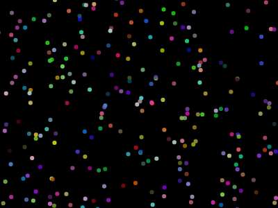
Particle System
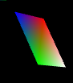
webgl - color shader and rotate
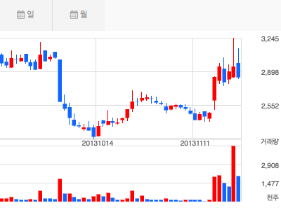
캔들스틱차트 for mobile
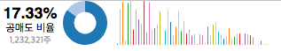
모바일 대쉬보드 프로토타이핑
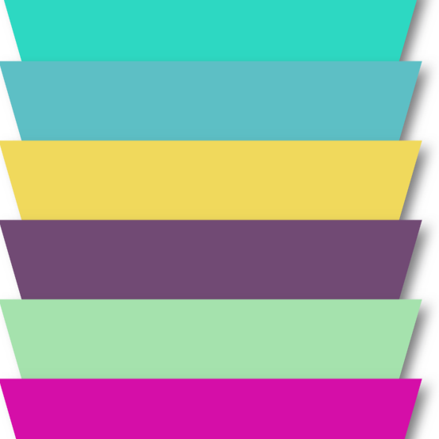
css3 transform
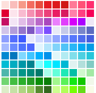
Color Picker
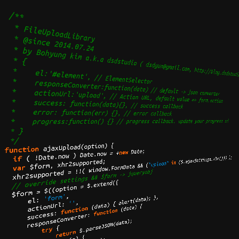
TinyCrossbrowser Ajax upload library
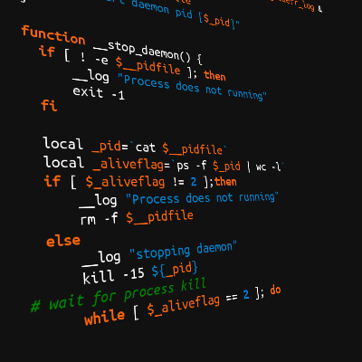
Linux/Unix 용 Daemon control script
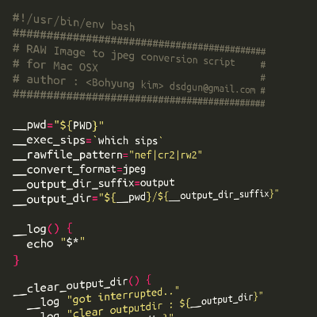
OSX 용 RAW Image to jpeg converter
natureof-code-js
natureof-code 책에 있는 processing 기반 예제들을 js로 포팅해보았습니다.
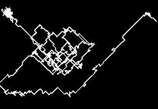
Random Walk
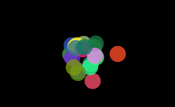
Following ball
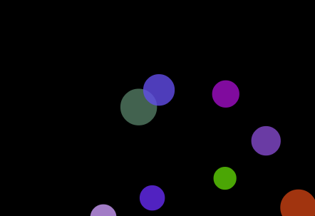
Bouncing ball
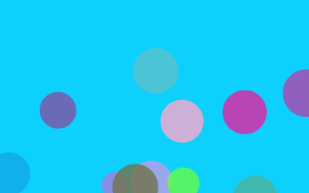
Bouncing ball with liquid
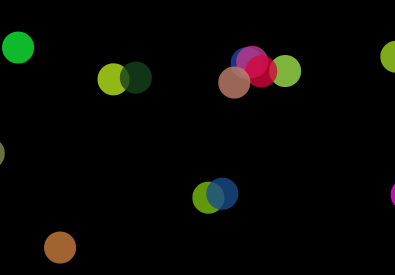
만유인력
webgl study
webgl transformation
cube perspective projection
prototyping
Codemirror + markdown editor